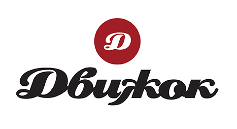

Материал компании

MITEX 2026 · Россия · Стенд 7D904
ДВИЖОК
Карточка проверена 10 ноября 2026, 09:28 · Источник ↗ · Снимок оригинальной карточки ↗
IT, маркетинг и медиа — в подборку услуг →
О компании
«Движок» – ежемесячный автомобильный журнал и интернет-портал для экспертов автомобильной индустрии и всех, кто интересуется автомобилями, запчастями для них и всем, что связано с послепродажным обслуживанием машин. В журнале и на сайте вы найдете все, что нужно знать о текущих тенденциях на рынках автомобилей, автокомпонентов, аксессуаров и инструмента. Мы тестируем автомобили и проводим сравнительные автокомпонентов, аксессуаров и автоинструмента.
Контакты
Сайт: http://www.dvizhok.suE-mail: dvigokmagazin@mail.ruТелефон: +7 (812) 448-57-87social: https://t.me/dvizhok_journalsocial: https://vk.ru/dvizhokmagsocial: https://rutube.ru/channel/24245862/social: https://dzen.ru/dvizhok
Все контактные сведения из карточки
Контакты ул. Комиссара Смирнова, 15, лит. А, офис 347 Телефон: +7 (812) 448-57-87 E-mail: dvigokmagazin@mail.ru Адрес: 195277, Россия, Санкт-Петербург, Санкт-Петербург, ул. Комиссара Смирнова, 15, лит. А, офис 347 Веб-сайт: http://www.dvizhok.su/ E-mail: dvigokmagazin@mail.ru Телефон: +7 (812) 448-57-87
Ранее найденные соцсети — октябрь 2026
Эти ссылки найдены при предыдущем обходе сайтов компаний. Актуальность контактов уточняйте у участника.
Все рубрики участника
Mitex - Рубрикатор
- 5. Слесарный, монтажный, столярный, ручной инструмент
- 8. Инструмент и оборудование для автосервиса
Зал
- Зал № 7
Участник выставки
- MITEX
Фотографии и изображения

Видео, каталоги и документы
Последние публикации в Telegram
До десяти последних сообщений каждого найденного канала. Оригинал открывается по ссылке.
Российский авторынок в 2026 году: итоги октября и 10 месяцев «Автостат» подвёл итоги авторынка за 10 месяцев 2026 года. Общие продажи выросли на 1% —…
MARSHALL выпустил детали трансмиссии для спецтехники Компания MARSHALL представила более 50 артикулов деталей трансмиссии для строительной и сельскохозяйственной техники с мостами JCB, Carraro, CNH, Caterpillar,…
За пять лет Китай и Япония поделили почти весь ввоз авто в Россию С января 2022-го по октябрь 2026-го в страну поступило 4,79 млн автомобилей,…
Evolute i-Space перейдет на российские батареи Компания «Системы автономной энергии» (САЭ, входит в ГК «Итэлма») к концу 2027 года намерена освоить полный цикл производства тяговых…
Audi зарегистрировала в России знак спортивной линейки Немецкая компания Audi зарегистрировала в России товарный знак своей линейки спортивных автомобилей Audi S. Об этом сообщают РИА…
Спрос на Cybertruck обернулся возвратом депозитов Tesla вернет предоплаты клиентам, заказавшим Cybertruck, поскольку спрос на пикап превышает производственные возможности, заявил генеральный директор Илон Маск. Об…
Бестселлер Toyota в России неожиданно сменился Самым продаваемым автомобилем Toyota в России за 10 месяцев остается кроссовер RAV4, но в октябре лидерство временно перешло к…
StartVOLT пополнил линейку стекол для фар Бренд StartVOLT выпустил 23 новые позиции стекол для фар, предназначенных для отечественных автомобилей и иномарок, включая грузовые. Об этом…
Tenet преодолел 150 тысяч продаж в России Бренд Tenet, созданный «АГР» и Defetoo, продал в России 150-тысячный автомобиль за 14 месяцев работы. Об этом сообщила…
Москвич М70 и М90 выдержали ледяной экзамен Кроссоверы Москвич М70 и М90 прошли зимние испытания, в ходе которых температура опускалась до -41°C. Об этом сообщила…